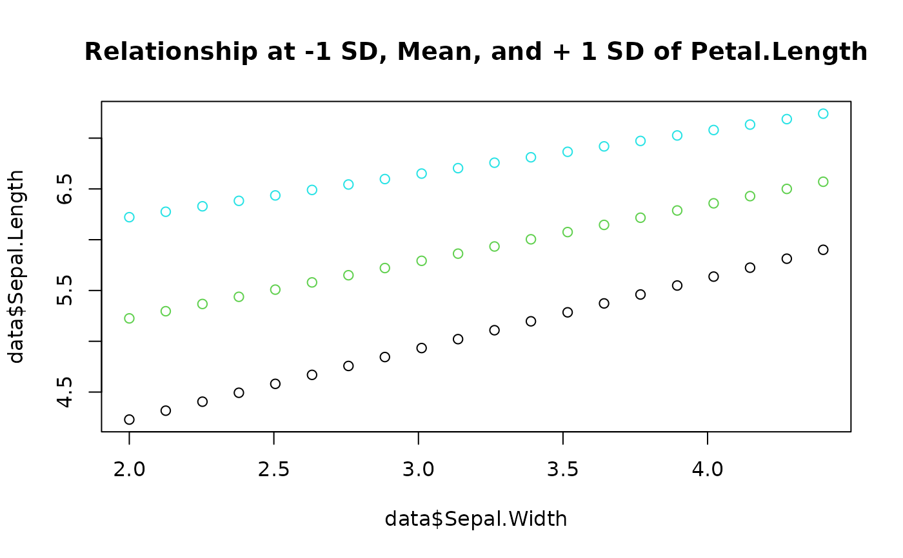

Create a reference matrix, useful for visualisation, with evenly spread and
combined values. Usually used to make generate predictions using get_predicted().
See this vignette for a tutorial on how to create a visualisation matrix using this function.
Usage
get_datagrid(x, ...)
# S3 method for data.frame
get_datagrid(
x,
at = "all",
factors = "reference",
numerics = "mean",
preserve_range = FALSE,
reference = x,
length = 10,
range = "range",
...
)
# S3 method for numeric
get_datagrid(x, length = 10, range = "range", ...)
# S3 method for factor
get_datagrid(x, ...)
# S3 method for default
get_datagrid(
x,
at = "all",
factors = "reference",
numerics = "mean",
preserve_range = TRUE,
reference = x,
include_smooth = TRUE,
include_random = FALSE,
include_response = FALSE,
data = NULL,
...
)Arguments
- x
An object from which to construct the reference grid.
- ...
Arguments passed to or from other methods (for instance,
lengthorrangeto control the spread of numeric variables.).- at
Can be
"all", a character vector or list of named elements, indicating the predictors of interest (focal predictors). Can also contain assignments (as named list, e.g.at = list(c(Sepal.Length = c(2, 4), Species = "setosa")), or as string, e.g.at = "Sepal.Length = 2"orat = c("Sepal.Length = 2", "Species = 'setosa'")- note the usage of single and double quotes to assign strings within strings). The remaining variables will be fixed.- factors
Type of summary for factors. Can be
"reference"(set at the reference level),"mode"(set at the most common level) or"all"to keep all levels.- numerics
Type of summary for numeric values. Can be
"all"(will duplicate the grid for all unique values), any function ("mean","median", ...) or a value (e.g.,numerics = 0).- preserve_range
In the case of combinations between numeric variables and factors, setting
preserve_range = TRUEwill drop the observations where the value of the numeric variable is originally not present in the range of its factor level. This leads to an unbalanced grid. Also, if you want the minimum and the maximum to closely match the actual ranges, you should increase thelengthargument.- reference
The reference vector from which to compute the mean and SD. Used when standardizing or unstandardizing the grid using
effectsize::standardize.- length
Length of numeric target variables selected in
"at". This arguments controls the number of (equally spread) values that will be taken to represent the continuous variables. A longer length will increase precision, but can also substantially increase the size of the datagrid (especially in case of interactions). IfNA, will return all the unique values. In case of multiple continuous target variables,lengthcan also be a vector of different values (see examples).- range
If
"range"(default), will use the minimum and maximum of the original data vector as end-points (min and max). If an interval type is specified, such as"iqr","ci","hdi"or"eti", it will spread the values within that range (the default CI width is95%but this can be changed by adding for instanceci = 0.90. SeeIQR()andbayestestR::ci(). This can be useful to have more robust change and skipping extreme values. If"sd"or"mad", it will spread by this dispersion index around the mean or the median, respectively. If thelengthargument is an even number (e.g.,4), it will have one more step on the positive side (i.e.,-1, 0, +1, +2). The result is a named vector. See examples.- include_smooth
If
xis a model object, decide whether smooth terms should be included in the data grid or not.- include_random
If
xis a mixed model object, decide whether random effect terms should be included in the data grid or not. Ifinclude_randomisFALSE, butxis a mixed model with random effects, these will still be included in the returned grid, but set to their "population level" value (e.g.,NAfor glmmTMB or0for merMod). This ensures that commonpredict()methods work properly, as these usually need data with all variables in the model included.- include_response
If
xis a model object, decide whether the response variable should be included in the data grid or not.- data
Optional, the data frame that was used to fit the model. Usually, the data is retrieved via
get_data().
Examples
# Datagrids of variables and dataframes =====================================
if (require("bayestestR", quietly = TRUE) & require("datawizard", quietly = TRUE)) {
# Single variable is of interest; all others are "fixed" ------------------
# Factors
get_datagrid(iris, at = "Species") # Returns all the levels
get_datagrid(iris, at = "Species = c('setosa', 'versicolor')") # Specify an expression
# Numeric variables
get_datagrid(iris, at = "Sepal.Length") # default spread length = 10
get_datagrid(iris, at = "Sepal.Length", length = 3) # change length
get_datagrid(iris[2:150, ],
at = "Sepal.Length",
factors = "mode", numerics = "median"
) # change non-targets fixing
get_datagrid(iris, at = "Sepal.Length", range = "ci", ci = 0.90) # change min/max of target
get_datagrid(iris, at = "Sepal.Length = [0, 1]") # Manually change min/max
# Standardization and unstandardization
data <- get_datagrid(iris, at = "Sepal.Length", range = "sd", length = 3)
data$Sepal.Length # It is a named vector (extract names with `names(out$Sepal.Length)`)
# TODO: uncomment when datawizard > 0.3.1 is out
# datawizard::standardize(data, select = "Sepal.Length")
# data <- get_datagrid(iris, at = "Sepal.Length = c(-2, 0, 2)") # Manually specify values
# data
# datawizard::unstandardize(data, select = "Sepal.Length")
# Multiple variables are of interest, creating a combination --------------
get_datagrid(iris, at = c("Sepal.Length", "Species"), length = 3)
get_datagrid(iris, at = c("Sepal.Length", "Petal.Length"), length = c(3, 2))
get_datagrid(iris, at = c(1, 3), length = 3)
get_datagrid(iris, at = c("Sepal.Length", "Species"), preserve_range = TRUE)
get_datagrid(iris, at = c("Sepal.Length", "Species"), numerics = 0)
get_datagrid(iris, at = c("Sepal.Length = 3", "Species"))
get_datagrid(iris, at = c("Sepal.Length = c(3, 1)", "Species = 'setosa'"))
# With list-style at-argument
get_datagrid(iris, at = list(Sepal.Length = c(1, 3), Species = "setosa"))
}
#> Sepal.Length Species Sepal.Width Petal.Length Petal.Width
#> 1 1 setosa 3.057333 3.758 1.199333
#> 2 3 setosa 3.057333 3.758 1.199333
# With models ===============================================================
# Fit a linear regression
model <- lm(Sepal.Length ~ Sepal.Width * Petal.Length, data = iris)
# Get datagrid of predictors
data <- get_datagrid(model, length = c(20, 3), range = c("range", "sd"))
# Add predictions
data$Sepal.Length <- get_predicted(model, data = data)
# Visualize relationships (each color is at -1 SD, Mean, and + 1 SD of Petal.Length)
plot(data$Sepal.Width, data$Sepal.Length,
col = data$Petal.Length,
main = "Relationship at -1 SD, Mean, and + 1 SD of Petal.Length"
)
